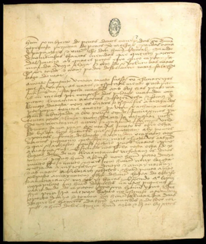
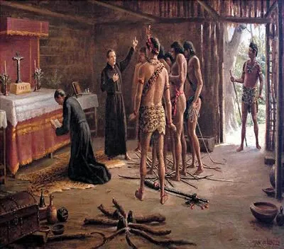
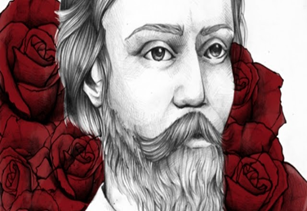
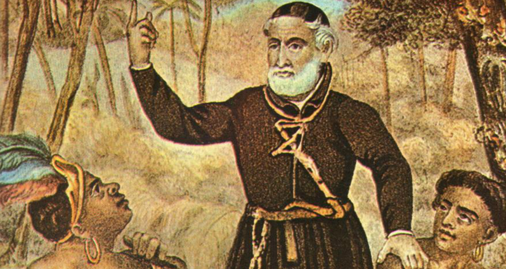

Escolas literárias
Trovadorismo
Em breve
Humanismo
Em breve
Classicismo
Em breve
Quinhentismo
Literatura informativa:
.png) Textos basicamente
descritivos, que descreve basicamente a natureza encontrada pelos viajantes no início do século XVI.
Os principais cronistas desse
período são: Pero Vaz de Caminha, Pero Magalhães Gândavo.
A Carta de Pero Vaz de
Caminha, escrita para o Rei de Portugal, D. Manuel, é considerada o marco inicial da Literatura
Brasileira, visto ser o primeiro documento escrito sobre a história do Brasil.
Seu conteúdo aborda os primeiros contatos dos lusitanos com os indígenas brasileiros, bem como as
informações e impressões sobre a descoberta das novas terras.
Textos basicamente
descritivos, que descreve basicamente a natureza encontrada pelos viajantes no início do século XVI.
Os principais cronistas desse
período são: Pero Vaz de Caminha, Pero Magalhães Gândavo.
A Carta de Pero Vaz de
Caminha, escrita para o Rei de Portugal, D. Manuel, é considerada o marco inicial da Literatura
Brasileira, visto ser o primeiro documento escrito sobre a história do Brasil.
Seu conteúdo aborda os primeiros contatos dos lusitanos com os indígenas brasileiros, bem como as
informações e impressões sobre a descoberta das novas terras.
Veja, a seguir, um trecho da Carta de Pero Vaz de Caminha:
 Neste dia, a horas de véspera, houvemos vista de terra! Primeiramente dum grande monte, mui alto e redondo; e doutras serras mais baixas ao sul dele; e de terra chã, com grandes arvoredos: ao monte alto o capitão pôs nome – o Monte Pascoal e à terra – a Terra da Vera Cruz. Mandou lançar o prumo. Acharam vinte e cinco braças; e ao sol posto, obra de seis léguas da terra, surgimos âncoras, em dezenove braças -- ancoragem limpa. Ali permanecemos toda aquela noite. E à quinta-feira, pela manhã, fizemos vela e seguimos em direitos à terra, indo os navios pequenos diante, por dezessete, dezesseis, quinze, catorze, treze, doze, dez e nove braças, até meia légua da terra, onde todos lançamos âncoras em frente à boca de um rio. E chegaríamos a esta ancoragem às dez horas pouco mais ou menos. Dali avistamos homens que andavam pela praia, obra de sete ou oito, segundo disseram os navios pequenos, por chegarem primeiro. Então lançamos fora os batéis e esquifes, e vieram logo todos os capitães das naus a esta nau do Capitão-mor, onde falaram entre si. E o Capitão-mor mandou em terra no batel a Nicolau Coelho para ver aquele rio. E tanto que ele começou de ir para lá, acudiram pela praia homens, quando aos dois, quando aos três, de maneira que, ao chegar o batel à boca do rio, já ali havia dezoito ou vinte homens. Eram pardos, todos nus, sem coisa alguma que lhes cobrisse suas vergonhas. Nas mãos traziam arcos com suas setas. Vinham todos rijos sobre o batel; e Nicolau Coelho lhes fez sinal que pousassem os arcos. E eles os pousaram.
Literatura de Catequese:

Falar sobre a literatura de catequese significa, sobretudo, fazer referência aos tempos do Brasil ainda
sob o domínio de Portugal, em que nos atendo à questão de datas, cumpre dizer que no século XVI, tal
metrópole, visando à garantia desse domínio, enviou os jesuítas para catequisar os índios e os negros
vindos da África, a fim de povoar a terra recém-descoberta.
Dessa forma, os nomes mais cotados para
esse tipo de escrita (tida como registo) foram: Padre Manuel da Nóbrega, Fernão Cardim e José de
Anchieta.
Esses jesuítas eram missionários da Companhia de Jesus, caracterizada por uma organização fundada
pelo espanhol Inácio de Loyola, em 1534, cujo objetivo maior era recuperar o poder de prestígio da
Igreja, perdido em virtude da Reforma Protestante. Dessa forma, Nóbrega, chegando ao Brasil, munido da
primeira missão jesuítica, manteve com os demais membros da companhia uma vasta correspondência,
relatando acerca dos hábitos, costumes e a língua dos índios, bem como sobre a relação que se
estabelecia entre os colonos e esses jesuítas.
Barroco
Características gerais
Contra- Reforma: Foi um movimento
de reestruturação da Igreja Católica
Conflito corpo x alma – O
homem deste século sempre em conflito consigo mesmo, conflito entre céu e inferno, amor e pecado,
trazendo resquícios da Reforma e ingressando na Contra – Reforma.
Teocentrismo X
Antropocentrismo.
Forma conturbada – Poemas que
trazem a presença de conceitos, temas, figuras de linguagem, sentimentos contraditórios.
Cultismo x Conceptismo: Dois
conceitos contraditórios que aparecem na escola Barroca, justamente por essa escola trazer tantos
conflitos. O Cultismo trata dos temas preocupando-se com a forma, o som, as rimas, com a escolha das
palavras enquanto que o conceptismo preocupa-se com a mensagem que será passada.
Efemeridade da vida
Barroco no Brasil
O Barroco no Brasil foi introduzido por intermédio dos jesuítas, no fim do século XVI. Só partir do século XVII, generaliza-se nos grandes centros de produção açucareira, especialmente na Bahia, através das igrejas.
Contexto histórico
Período colonial: Ciclo da cana – de – açúcar
Centro econômico do Brasil: Bahia
Principais representantes
Gregório de Matos Guerra
Gregório de Matos foi um dos maiores poetas brasileiros do período do Barroco. Além de poeta, Gregório foi advogado durante o período colonial. É conhecido como o “Boca do Inferno”, sendo famoso por seus sonetos satíricos, donde ataca, muitas vezes, a sociedade baiana da época. Dono de uma personalidade rebelde, Gregório criticou diversos aspectos da sociedade, do governo e da Igreja Católica. Por esse motivo, foi perseguido pela Inquisição e condenado ao degredo em Angola no ano de 1694.
Temática:
Religiosa
Amorosa
Satírica
Para melhor compreender melhor o estilo e a linguagem de Gregório de Matos, leia dois sonetos do poeta:
À cidade da Bahia
“A cada canto um grande conselheiro.
que nos quer governar cabana, e vinha,
não sabem governar sua cozinha,
e podem governar o mundo inteiro.
Em cada porta um freqüentado olheiro,
que a vida do vizinho, e da vizinha
pesquisa, escuta, espreita, e esquadrinha,
para a levar à Praça, e ao Terreiro.
trazidos pelos pés os homens nobres,
Muitos mulatos desavergonhados,
posta nas palmas toda a picardia.
Estupendas usuras nos mercados,
todos, os que não furtam, muito pobres,
e eis aqui a cidade da Bahia.”
Contemplando nas cousas do mundo
“Neste mundo é mais rico, o que mais rapa:
Quem mais limpo se faz, tem mais carepa:
Com sua língua ao nobre o vil decepa:
O Velhaco maior sempre tem capa.
Mostra o patife da nobreza o mapa:
Quem tem mão de agarrar, ligeiro trepa;
Quem menos falar pode, mais increpa:
Quem dinheiro tiver, pode ser Papa.
A flor baixa se inculca por Tulipa;
Bengala hoje na mão, ontem garlopa:
Mais isento se mostra, o que mais chupa.
Para a tropa do trapo vazio a tripa,
E mais não digo, porque a Musa topa
Em apa, epa, ipa, opa, upa.”
Padre Antônio Vieira
 Padre Antônio Vieira foi um orador, filósofo, escritor e um dos missionários enviados para a catequização dos índios (conversão para a religião católica) na conquista do Brasil, no século XVII.Sermão da Sexagésima
Este é sem dúvida, um dos mais famosos de seus sermões, dividido em 10 partes e escrito a moda conceptista do Barroco, em que há o privilégio do jogo de ideias.A temática do texto gira em torno da importância de pregar a palavra de Deus, utilizada por ele no sentido metafórico de “semear” que, por sua vez deve ser sentida para que não seja um conteúdo vazio.
Segue abaixo alguns trechos de sua obra:
“Ecce exiit qui seminat, seminare. Diz Cristo que «saiu o pregador evangélico a semear» a palavra divina. Bem parece este texto dos livros de Deus. Não só faz menção do semear, mas também faz caso do sair: Exiit, porque no dia da messe hão-nos de medir a semeadura e hão-nos de contar os passos. O Mundo, aos que lavrais com ele, nem vos satisfaz o que dispendeis, nem vos paga o que andais. Deus não é assim. Para quem lavra com Deus até o sair é semear, porque também das passadas colhe fruto. Entre os semeadores do Evangelho há uns que saem a semear, há outros que semeiam sem sair. Os que saem a semear são os que vão pregar à Índia, à China, ao Japão; os que semeiam sem sair, são os que se contentam com pregar na Pátria. Todos terão sua razão, mas tudo tem sua conta. Aos que têm a seara em casa, pagar-lhes-ão a semeadura; aos que vão buscar a seara tão longe, hão-lhes de medir a semeadura e hão-lhes de contar os passos. Ah Dia do Juízo! Ah pregadores! Os de cá, achar-vos-eis com mais paço; os de lá, com mais passos: Exiit seminare.” “Fazer pouco fruto a palavra de Deus no Mundo, pode proceder de um de três princípios: ou da parte do pregador, ou da parte do ouvinte, ou da parte de Deus. Para uma alma se converter por meio de um sermão, há-de haver três concursos: há-de concorrer o pregador com a doutrina, persuadindo; há-de concorrer o ouvinte com o entendimento, percebendo; há-de concorrer Deus com a graça, alumiando. Para um homem se ver a si mesmo, são necessárias três coisas: olhos, espelho e luz. Se tem espelho e é cego, não se pode ver por falta de olhos; se tem espelho e olhos, e é de noite, não se pode ver por falta de luz. Logo, há mister luz, há mister espelho e há mister olhos. Que coisa é a conversão de uma alma, senão entrar um homem dentro em si e ver-se a si mesmo? Para esta vista são necessários olhos, e necessária luz e é necessário espelho. O pregador concorre com o espelho, que é a doutrina; Deus concorre com a luz, que é a graça; o homem concorre com os olhos, que é o conhecimento. Ora suposto que a conversão das almas por meio da pregação depende destes três concursos: de Deus, do pregador e do ouvinte, por qual deles devemos entender que falta? Por parte do ouvinte, ou por parte do pregador, ou por parte de Deus?”
Arcadismo
Em breve
Romantismo
Em breve
Pré Modernismo
Em breve
Modernismo
Em breve
Pós Modernismo
Em breve